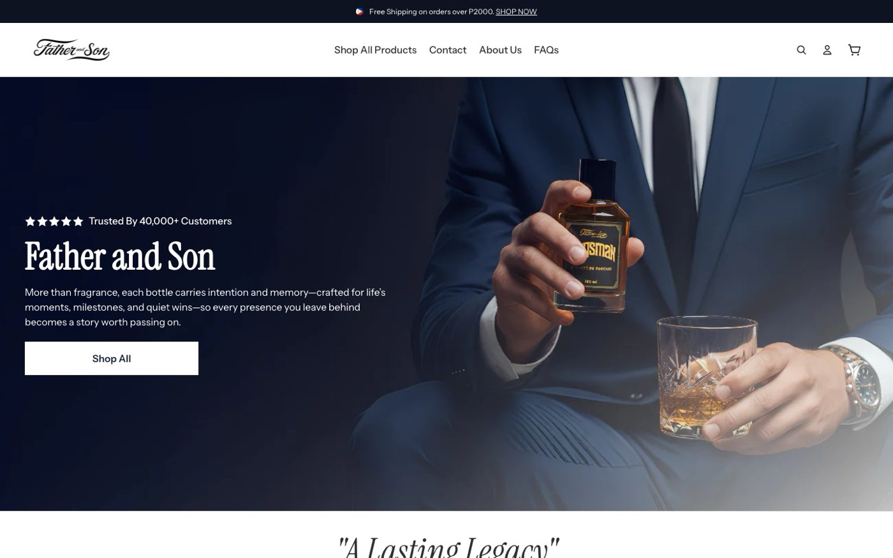
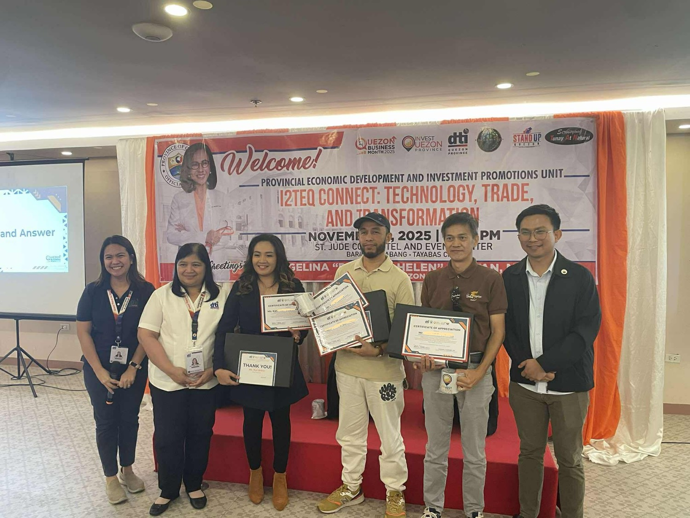
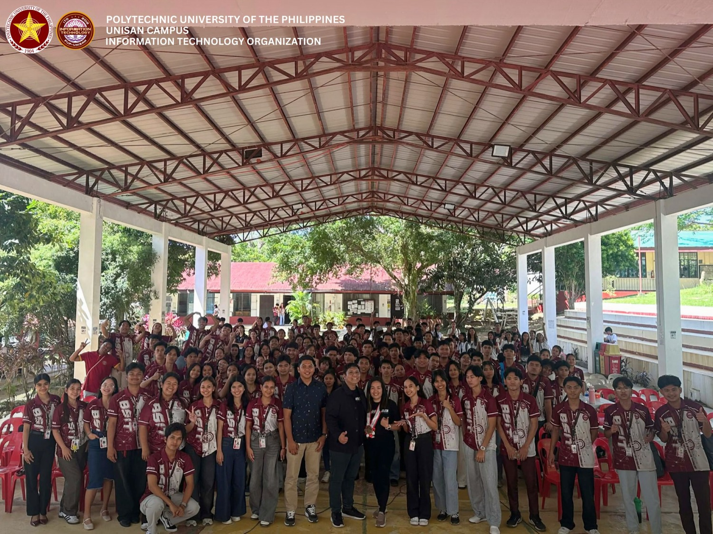

AI & Agentic Systems
Claude CodeClaude AgentsGeminiGrokCodexOllamaOpenCodeOpenClawComputer-Using AgentsMulti-Agent SystemsRAGLangChainLangGraph
AI Developer · Product · Systems · Education
AI Developer / Product Manager / Systems Architect / Licensed Professional Teacher
Building AI-powered products, scalable systems, and future-ready teams. From idea → product → deployment → adoption.
My career started in web development, evolved into product management and operations leadership, and today focuses on AI-powered applications, agentic systems, workflow automation, and software development.
I work at the intersection of technology, business, and education. Beyond building products, I train teams, develop SOPs, mentor aspiring developers, and help organizations create scalable systems that keep working long after implementation.
“The real bottleneck in digital transformation is not coding. It is product clarity.”
Developers can code. AI can generate code. But sustainable systems require clarity, structure, and execution discipline.
A local-first screen recorder built on SvelteKit + TypeScript + Tailwind v4. Captures screen, camera, mic and system audio, streams to disk via OPFS (never buffering full video in RAM), and detects browser/OS capabilities for cross-platform reliability. Roadmap layers in Whisper transcripts, AI summaries, a Mediabunny editor with cinematic auto-zoom, and auto-generated SOPs.
A deep-dive analysis of the 2026 screen-recording and SOP-generation market — 17 tools evaluated (Loom, Scribe, Screen Studio, Descript and more) across a feature-by-feature matrix. The work produced a full Product Requirements Document and a phased 6-week build plan that became Caputi Studio.
Shipped products & apps
An AI-powered HR and workflow system with a built-in LMS, learning modules, progress tracking, and gamified engagement to lift participation and training outcomes.
A Firebase-based Progressive Web App with AI assistance and database functionality — built and successfully sold to a local agency.
Automates Google Sheet processing, duplication, and permission handling — cutting manual work and improving operational efficiency. Used by a US-based ERC company.
A lightweight tool built in under 24 hours that compresses PDF files efficiently using AI-assisted workflows.
An AI-powered journaling and coaching app that guides users through reflection, decision-making, and personal growth.
An open-source tool that generates styled, ready-to-post social content quickly — streamlining content-creation workflows.
A simple, intuitive expense tracker focused on usability and real-time financial awareness.
An educational game for kids that blends learning with interactive gameplay to boost engagement.
Ventures & community
CRM, automation, operations, and growth systems for service businesses and digital companies.
A mission-driven initiative helping aspiring Filipino founders build AI-powered products and applications.
A community focused on modern AI-assisted software development and practical AI literacy.
A selection of landing pages, sales funnels, course platforms, and e-commerce stores built & optimized through Scale With System.
A few engagements where strategy, funnels, and automation turned into measurable revenue and growth — delivered through Scale With System.

Most online stores convert at just 1–4%. By rebuilding product funnels, sharpening offers, and split-testing video sales pages across the catalog, conversion climbed to a consistent 6–10% — and higher on hero products. The brand is now trusted by 40,000+ customers.
Built opt-in and sales funnels with lead-nurture automation for course launches. Batch 1 drove 845 opt-ins and ₱475,000 in sales; Batch 2 lifted the opt-in rate to 75%.
Architected the funnel, automations, and launch systems for Walter Rogon’s Content Generator Formula — grossing ₱1,000,000 (7 figures) on the very first launch.
Funnel and launch systems for Mark Darwin Balaswit’s program delivered ₱767,000 gross (6 figures) on the first launch.
Designed the mentorship funnel and supporting operations that scaled the program past ₱1,000,000 in gross revenue.
I believe technology is most impactful when knowledge is shared. I regularly train developers, educators, freelancers, founders, and aspiring technologists in AI, systems thinking, product development, and emerging technologies.


Pinnacle Minds — AI system architecture, workflow automation, and scalable product implementation for an international AI firm.
Scale With System — CRM, automation, operations and growth systems for service businesses and digital companies.
Funnel development, CRM architecture, and lead-nurturing systems across multiple brands.
Six Figure Ecom — product, systems, and technical leadership for an ecommerce venture.
DeepData — product strategy and delivery.
Interface design and front-end implementation for digital products.
Web development, systems, and digital products across finance, ecommerce, education, automotive, real estate, and government.
I’ve had the privilege of working alongside Kat, our Senior AI Developer, and she is an extraordinary leader and innovator. What sets her apart is not only her deep expertise in AI development but also her willingness to share knowledge — she mentors teammates and ensures everyone feels supported. She is truly an all-rounder.
The training under Kat completely transformed my development workflow and upgraded my technical skills. I gained immense confidence leveraging cutting-edge AI tools to accelerate system building, mastering clean version control with GitHub, and managing seamless production deployments.
The webinar is very informative and easy to understand. Kat made a step-by-step demo on the spot while explaining what each part is for. I’d definitely recommend them to anyone who wants their business or freelancing career to reach the next level.
Honestly one of the best learning experiences I’ve gone through. What made the biggest difference was the environment Kat built — it never felt like you had to be perfect. You could make mistakes, figure out what went wrong, and grow from it.
She has a way of making you feel seen and capable, even when you doubt yourself. Her patience and encouragement pushed me to go beyond what I thought I could do. It wasn’t just about learning tools — it was about growing as a person.
I learned a wide variety of modern development and AI tools that changed how I approach building and deploying web applications. This training didn’t just teach me skills; it shaped how I think as a developer.
I gained confidence in deployment, QA testing, and using AI tools like Gemini CLI — discovering platforms like Vercel, Railway, and Render. The OJT bridged the gap between academic knowledge and real-world industry practice.
I gained valuable experience that helped me grow both personally and professionally — communication, adaptability, real-world workflows, and problem-solving. I learned to work under pressure while staying calm and focused.
Napaka-valuable po ng webinar, at napaka-approachable at friendly ng mga coaches. Talagang malaking tulong ang Scale With System — nakaka-save ng oras at nakaka-increase ng productivity. Salamat po, coach Kath!
I learned valuable skills in modern web development, AI-assisted workflows, project organization, and documentation practices — gaining confidence developing and managing web applications in a structured, efficient way.
Leaders and partners I’ve built, shipped, and scaled alongside — available as character & professional references.
Entrepreneur and operator who founded Smart ERC, a boutique tax-credit firm serving small and medium businesses across the USA. Core strengths in strategic planning, team collaboration, and operational efficiency — taking opportunities from 0 to 1 and fostering organizational growth.
in/joseph-kerolos ↗AI systems developer and automation architect with 8+ years in digital systems, SaaS, and business automation. He builds LLM-powered applications with Claude and APIs — architecting workflows, backend logic, and AI-driven CRM & marketing systems. Together we co-run Scale With System and have supported multiple 6–7 figure launches.
in/diegoarbizjr ↗Founder and CEO of Debt Aid Consulting International (est. 2011) — a debt-relief consultancy based in Fremont, California with operations in the Philippines, backed by 37+ years of financial expertise, helping people overwhelmed by loans regain control. I served as Team Lead, Marketing Automation Specialist.
in/ben-l ↗Need a product built, a system designed, a team trained, and a business scaled? That’s the work I do.